Updating the «Cultivable Area» Layer of the Agricultural Office, Canton of Thurgau¶
Adrian Meyer (FHNW)
Contributions to Background & Agricultural Law: Pascal Salathé (FHNW)
Proposed by the Canton of Thurgau - PROJ-TGOBJ
March 2021 to June 2021 - Published on July 7, 2021
Abstract: The Cultivable agricultural area layer ("LN, Landwirtschaftliche Nutzfläche") is a GIS vector product maintained by the cantonal agricultural offices and serves as the key calculation index for the receipt of direct subsidy contributions to farms. The canton of Thurgau requested a spatial vector layer indicating locations and area consumption extent of the largest silage bale deposits intersecting with the known LN area, since areas used for silage bale storage are not eligible for subsidies. Having detections of such objects readily available greatly reduces the workload of the responsible official by directing the monitoring process to the relevant hotspots. Ultimately public economical damage can be prevented which would result from the payout of unjustified subsidy contributions.

1 Introduction¶
1.1 Background¶
Switzerland's direct payment system is the basis for sustainable, market-oriented agriculture. The federal government supports local farms in the form of various types of contributions and enables farming families to claim an adequate income. (cf. Art. 104 BV)
In the years 2014-2017 a new agricultural policy system was introduced in Switzerland. With specialized direct payment subsidies named «Landscape Quality Contributions» («LQ», Landschaftsqualitätsbeiträge in German, Contributions à la qualité du paysage in French) farms and agricultural businesses can be awarded for complying with measures that aim at increasing biodiversity and maintaining extensively cultivated open grasslands.
Subsidies are calculated by area and the agricultural offices of the respective cantonal administration have to constantly monitor the landscape status as well as the compliance of the business operations in order to approve the requested amounts. Only certain land usage profiles are eligible for subsidies payment.
According to Art. 104 §1 BV, the agricultural sector, for its part, has to make a substantial decisive contribution to:
- Secure the supply of the population with goods and aliments.
- Preserve of the natural foundations of life and maintain the cultural landscape.
- Allow decentralized settlement throughout the territorial area.
In order to be able to claim direct payments, farms are subject to various conditions. The Cultivable agricultural area layer («LN», from German Landwirtschaftliche Nutzfläche) is a GIS product maintained by the cantonal agricultural offices and serves as the key calculation index for the receipt of contributions. (cf. Art. 35 DZV).
The registration and adjustment of the LN is part of the periodic update («PNF», Periodische Nachführung) within the framework of the official cadastral survey («AV», Amtliche Vermessung) and is usually carried out every 6 years (Gamma 2021). Its correct determination is of immense importance, because if the LN area derived from the cadastral survey data deviates from the actual conditions on site, incorrect contribution amounts may be paid out (swisstopo/BLW/BUWAL 2000).
Farm areas that are not eligible for contributions, in particular areas that are not usable for effective agriculture such as farmyards or storage areas (e.g. for silage hay bales), are constantly changing due to the high degree of mechanization in agriculture and often fall within the perimeter of the LN. The tracking of these areas with conventional surveying such as repeated field visits or the visual interpretation of current aerial imagery proves to be very time-consuming and costly. Possible alternative approaches are searched for in the context of this use case project.
Artificial neural networks based on Deep Learning (DL) have been used for automated detection and classification of image features for quite some time. Reliable detection from aerial imagery using applications of DL would enable cost-effective detection of uneligible areas and provide added value to agricultural offices in all cantons.
The Swiss Territorial Data Lab (STDL) is a project of co-creation and a space of experimentation which aims to solve concrete problems of public administrations by using data science applied to geodata. These characteristics make it the perfect environment to conduct this project. Research in the agricultural domain was already lead by project's partners at Fachhochschule Nordwestschweiz (FHNW) using machine learning. Furthermore, students are regularly involved in these projects, for example to automatically define the agricultural cultivation boundaries in collaboration with the Canton of Thurgau.
1.2 Silage Bales¶
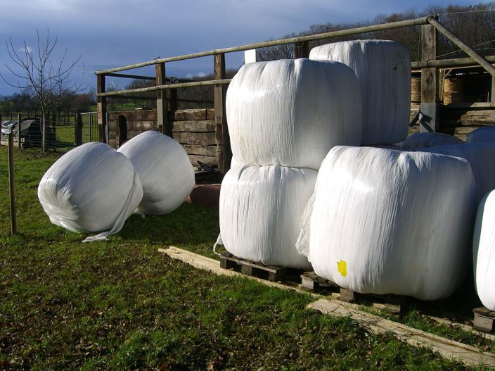
Photo of wrapped and stacked silage hay bales (Source Wikimedia).
One of several features of interest specifically excluded from the subsidized cultivable LN area are silage hay bales. These bales are processed and compacted fermenting grass cuttings wrapped in plastic foil. They often roughly measure 1 - 2 cubic meters in volume and are weighed in at around 900kg. They are mainly used as animal food during winter when no fresh hay is available. Farmers are encouraged to compactly («discretely») stack them in regular piles at few locations rather than keeping them in scattered collections consuming large areas.
The agricultural office can assess the silage bale stack locations and sizes in order to approve the application for subsidies, since areas where silage bales are stored do not count into the cultivable LN area. Farmers can specify those areas where they must not receive contributions for in a specialized webGIS system by digitizing them manually with the attribute «code 898». For validation purposes specialists are manually evaluating aerial imagery and conduct field visits. The process of aerial imagery evaluation is arduous and monotonous and could therefore greatly profit from automatization.
The agricultural office of the Canton of Thurgau (LWA) requested a spatial vector layer indicating locations and area consumption extent of the largest silage bale deposits intersecting with the known LN area. The delivered dataset should be compatible with their webGIS workflow and should be made available with new aquisitions of aerial imaging campaigns. Having such detections readily available would reduce the workload of the responsible official by directing the monitoring to the relevant hotspots. Ultimately public economical damage can be prevented which would result from the payout of unjustified subsidy contributions. This project therefore aims at the development of an efficient silage bale detection algorithm which offers a highly accurate performance and can be quickly deployed over imaged areas as large as the complete canton of Thurgau (approx. 992 km²).
2 Method¶
2.1 Overview¶
Sileage bale stacks are clearly visible on the newest 2019 layer of the 10cm Swissimage orthophoto provided by Swisstopo. A few hundred of these stacks were manually digitized as vector polygons with QGIS in a semi-automatic approach.
Following the structure of the STDL Object Detection Framework, an Area of Interest (AoI) was defined (most of the cantonal area of Thurgau) and tiled into smaller quadratic images (tiles). Those tiles containing an intersecting overlap with an annotation were subsequently fed to a neural object detection network for training in a process known as Transfer Learning. A random portion of the dataset was kept aside from the training process in order to allow an unbiased evaluation of the detector performance.
Multiple iterations were performed in order to find out near-optimal input parameters such as tile size, zoom level, or network- and training-specific variables termed «hyperparameters». All detector models were evaluated for their prediction perforwmance on the reserved test dataset. The best model was chosen by means of its optimal overall performance.
This model was used in turn to perform a prediction operation («Inference») on all tiles comprising the AoI – thereby detecting silage hay bale stacks over the whole canton of Thurgau.
Postprocessing included filtering the resulting polygons by a high confidence score threshold provided by the detector for each detection in order to reduce the risk of false positive results (misidentification of an object as a silage bale stack). Subsequently adjacent polygons on seperate tiles were merged by standard vector operations. A spatial intersection with the known LN layer was performed to identify the specific areas occupied by silage stacks which should not receive contributions but potentially did in last years rolling payout. Only stacks covering more than 50m2 of LN area are considered «relevant» for the final delivery which translates to the equivalent of max. 10 CHF subsidy payment difference. For completeness, all LN-intersecting polygons of detections covering at least 20m2 are included in the finaly delivery. Filtering can be undertaken easily on the end user side by sorting the features with along a precalculated area column.
2.2 Aerial Imagery¶
The prototypical implementation uses the publically available Swissimage dataset. It was last flown for Thurgau in spring 2019 and offers a maximum spatial resolution of 10cm GSD (Ground Sampling Distance) at 3 year intervals. As the direct subsidies are paid out yearly the periodicity of Swissimage in theory is insufficient for annual use. In this case the high quality imagery on the one hand can serve as a proof of concept though. On the other hand the cantons have the option to order own flight campaigns to increase the periodicity of available aerial imagery if sufficient need can shown from several relevant administrative stakeholders. For our approach aerial images need to be downloaded as small quadratic subsamples of the orthomosaic called «tiles» to be used in the Deep Learning process. The used tiling grid system follows the slippy map standard with an edge length of 256 pixels and a zoom level system which is derived from a quadaratic division on a mercator-projected world map (whole world equals zoom level = 0). A zoom level = 18 in this system would roughly equal to a ground sampling distance (GSD) of 60 cm.
2.3 Labels / Annotations¶
As no conducive vector dataset for silage bale locations exists in Thurgau or other sources known at this point, the annotations for this use case had to be created manually by the data scientists at STDL. A specific labeling strategy to obtain such a dataset was therefore implemented.
Using Swissimage 10cm as a WMS bound basemap in QGIS, a few rural areas throughout the canton of Thurgau were selected and initially approximately 200 stacks of silage bales were manually digitized as polygons. Clearly disjunct stacks were digitized as two separate polygons. For partially visible stacks only visible parts were included. Loose collection of bales were connected into one common polygon if the distances between the single bales were not exceeding the diameter of a single bale. Ground imprints where silage bales were previously stored were not included. Also shadows on the ground were not part of the polygon. Plastic membrane rests were not included unless they seemed to cover additional bales. Most bales were of circular shape with an approximate diameter of 1.2 – 1.5 m, but also smaller rectangular ones were common. Colours ranged from mostly white or green tinted over still common dark green or grey to also more exotic variants such as pink, light blue and yellow (the latter three are related to a specific cancer awareness program).
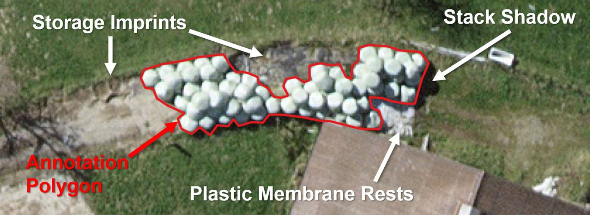
Image: Example of the annotation rules.
With these initial 200 annotations a preliminary detector was trained on a relatively high zoom level (18, 60cm GSD, tiling grid at about 150m) and predictions were generated over the whole cantonal area (See section «Training» for details). Subsequently, the 300 highest scoring new predictions (all above 99.5%) were checked visually in QGIS, precisely corrected and then transferred into the training dataset.
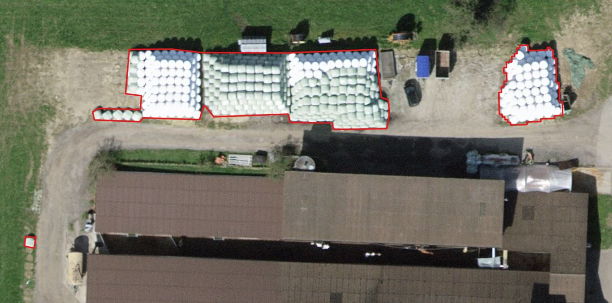
Image: Example of label annotations manually drawn (left and top), as well as semiautomatically generated (right) – the pixel structure of the detector is visible in the label.
All tiles containing labels were checked visually again at full zoom and missing labels were created manually. The resulting annotation dataset consists of approximately 700 silage bale stacks.
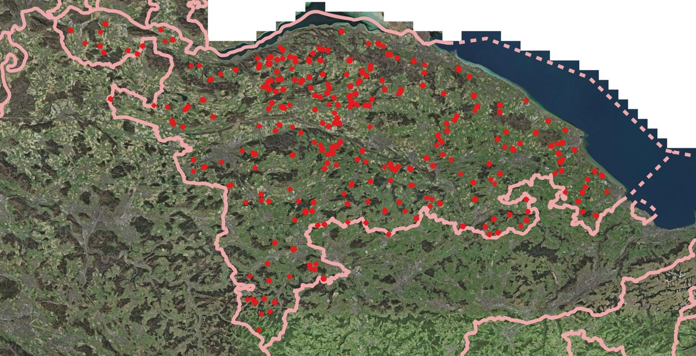
Image: Positions of the Silage Bale Labels (red) within the borders of Thurgau.
2.4 Training¶
Training of the model was performed with the STDL Object Detection Framework. The technology is based on a Mask RCNN architecture implemented with the High-Level API Detectron2 and the Deep Learning framework Pytorch. Parallelisation is achieved with CUDA-enabled GPUs on the High-Performance Computing cluster at the FHNW server facility in Muttenz. The Mask RCNN Backbone is formed by a ResNet-50 implementation and is accompanied by a Feature Pyramid Network (FPN). This combination of code elements results in a neural network leveraging more than 40 Mio. parameters. The dataset consists of RGB images and feature regions represented by pixel masks superimposing the imagery in the shape of the silage bale stack vectors.
Training is performed iteratively by presenting subsets of the tiled dataset to modify «edge weights» in the network graph. Progress is measured step by step by statistically minimizing the loss functions. Only tiles containing masks (labels) can be trained. Two smaller subsets of all label containing tiles are reserved from the training set (TRN), so a total of 70% of the trainable tiles are presented to the network for loss minimization. The validation set (VAL, 15%) and the test set (TST, 15%) also contain labels but are statistically independent from the TRN set. The VAL set is used to perform recurrent evaluation during training. Training can be stopped if the loss function on the validation set has reached a minimum since after that point further training would push the model into an overfitting scenario. The TST set serves as an unbiased reserve to evaluate the detector performance on previously «unseen», but labelled data. Tiles not containing a label yet were classified into a separate class called «other» (OTH). This dataset was only used for generating predictions.
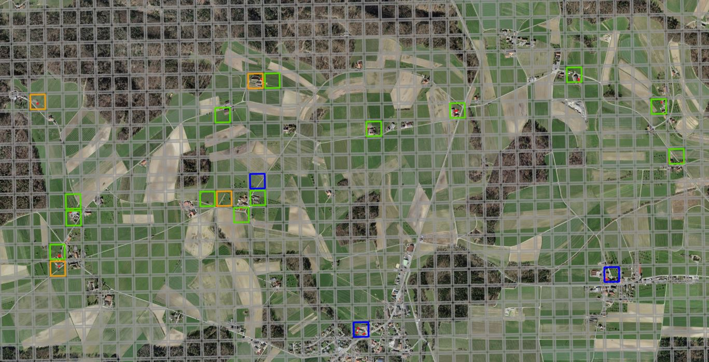
Image: Dataset Split – Grey tiles are only used in prediction (OTH); they do not contain any labels during training. The colourful tiles contain labels, but are scattered relatively sparsely.
Green tiles are used for training the model weights (TRN); orange tiles validate the learning progress during training to avoid overfitting (VAL) and blue tiles are reserved for unbiased post-training evaluation (TST).
Multiple training runs were performed not only to optimize the network-specific variables called «hyper-parameters» (such as batch size, learning rate or momentum), but also to test which zoom level (spatial resolution) would yield the best results.
2.5 Prediction and Assessment¶
For the TRN, VAL and TST subset, confusion matrix counts and classification metrics calculations can be performed since they offer a comparison with the digitized «ground truth». For all subsets (including the rest of the canton as OTH), predictions are generated as vectors covering those areas of a tile that the detector algorithm identifies as target objects and therefore attributes a confidence score.
In case of the label containing tiles, the overlap between the predictions and the labels can be checked. Is an overlap found between a label and a prediction this detection is considered a «True Positive» (TP). If the detector missed a label entirely this label can be considered as «False Negative» (FN). Did the detector predict a silage bale stack that was not present in the labelled data it is considered «False Positive» (FP). On the unlabelled OTH tiles, all detections are by definition therefore considered FP.
The counting of TPs, FPs and FNs on the TST subset allows the calculation of standard metrics such as precision (user accuracy), recall (producer accuracy) and F1 score (a common overall performance metric calculated as the harmonic mean of precision and recall). The counts, as well as the metrics can be plotted as function of the minimum confidence score threshold (THR) which can be set to an acceptable percentage for a certain detection task. A low threshold should generally yield fewer FN errors, while a high threshold should yield fewer FP detections.
The best performing model by means of maximum F1 score was used to perform a prediction run over the entire cantonal surface area.
2.6 Post-Processing¶
In order to obtain a consistent result dataset, detections need to be postprocessed. Firstly, the confidence score threshold operation is applied. Here, a comparatively high threshold can be used for this operation. «Missing» the detection of a silage bale stack (FN) is not as costly for the analysis of the resulting dataset at the agricultural office as analyzing large numbers of FP detections would be. Also missing single individual silage bales is much less problematic than missing whole large stacks. These larger stacks are typically attributed with high confidence scores though and are therefore less likely to be missed.
In some cases, silage bale stacks cross the tiling grid and are therefore detected on multiple images. This results in edge artifacts along the tile boundaries intersecting detections that should be unified. For this resaon adjacent detection polygons need to merged into a single polygon. This is achieved by first buffering all detections with a 1.5m radius (about the diameter of a single bale). Then all touching polygons are dissolved into a single feature. Afterwards, negative buffering with -1.5m radius is applied to restore the original boundary. This process also leads to an edge smoothing by planing the pixel step derived vector boundary into curves.
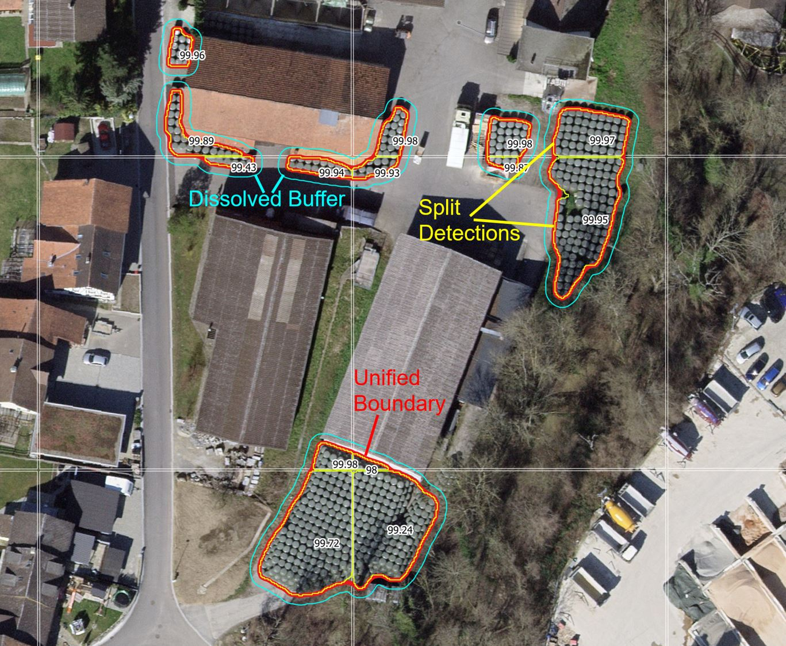
Image: Example of adjacent detection polygons that need to be unified (buffer dissolved).
Curve polygons contain a high number of vertex points, which is why a simplification operation can be performed afterwards. The intersection with the LN layer required a preparation of that dataset. First, the perimeters of all LN polygons in Thurgau, stemming from the cadastre, were intersected with the layer "LN difference". Areas which contained the attribute "No LN" in the difference layer were therefore removed, areas with the attribute "LN" or "To be checked" were kept or if necessary (if not yet available) added to the LN dataset. Areas excluded by farmers from the subsidy themself (so-called "layer code 898") were removed from the LN polygons. The silage bale detections were now intersected (clipped) with all remaining LN areas such that only those portions of the detections remained that were present within the LN perimeter. For all these leftover detection polygons, the area is calculated and added as an attribute to the polygon. With a threshold operation all silo bale stacks with an area below 20 m2 are filtered out of the dataset in order to provide only economically relevant detections.
3 Results¶
3.1 Metrics and Evaluation¶
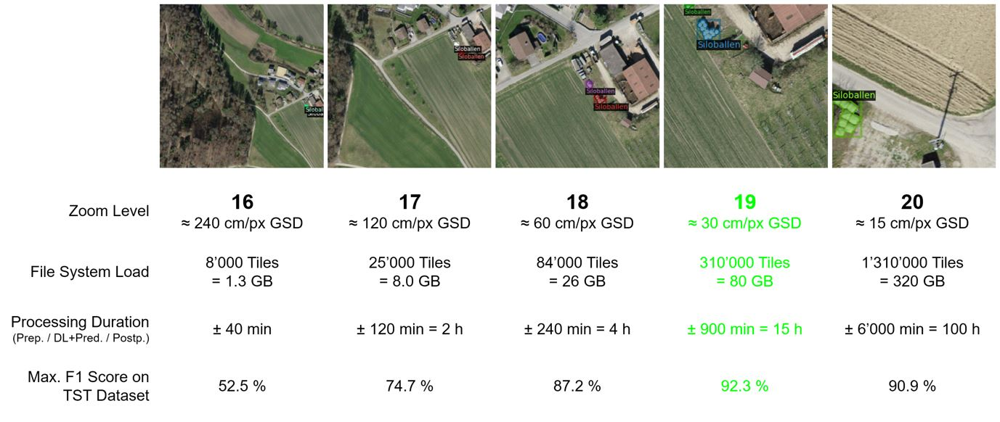
Figure: Performance of serveral detectors depending on zoom level (ground sampling distance) as measured by their maximum F1-Score.
The model trained with tiles at zoom level = 19 (every pixel approx. 30cm GSD) showed the highest performance with a maximum F1 Score of 92.3%. Increasing the resolution even further by using 15 cm/px GSD did not result in a gain in overall detection performance while drastically increasing storage needs and computational load.
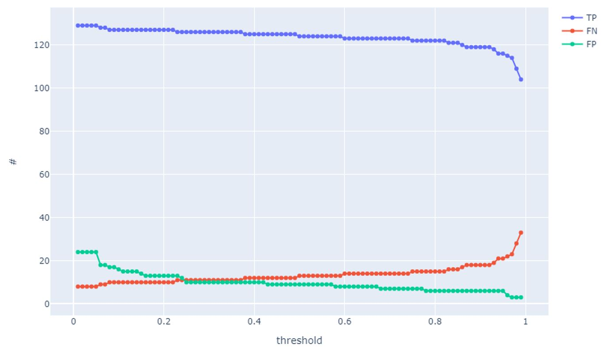
Figure: Confusion matrix counts on the TST dataset in dependency of the minimum confidence score threshold.
The detector model is performing very well on the independent TST dataset detecting the largest portion of silage bale stacks at any given confidence threshold. The number of FP reaches very low counts towards the higher end of the threshold percentage.
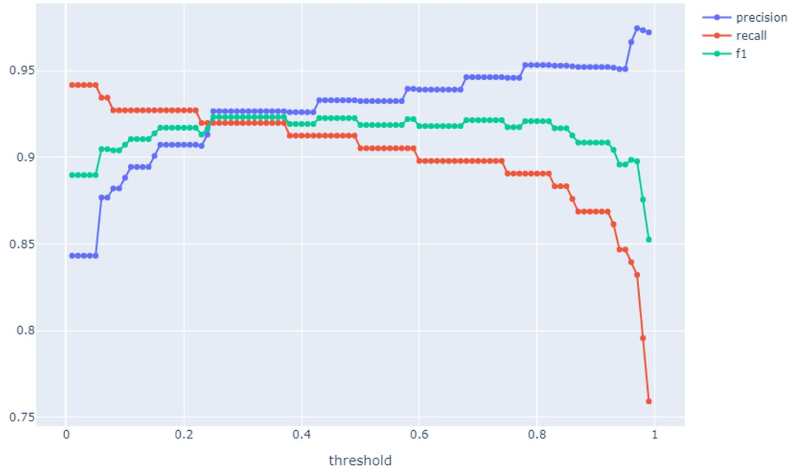
Figure: Performance metrics on the TST dataset as a function of the minimum confidence score threshold.
Precision, Recall and F1 Score all remain on very performant values throughout the threshold range. The F1 Score plateaus above 90% performance between 5% and 93% essentially allowing to choose any given threshold value to adapt the model performance to the end user needs.
For delivery of the dataset a detector was subsequently used at a threshold of 96%. At this value 809 silage bale stacks were rediscovered in the TRN, TST and VAL subset. Just 10 FP detections were found in these subsets. 97 silage bale stacks were not rediscovered (FN). Hence, the model precision (user accuracy) was set at approx. 99% and the recall (hit rate, producer accuracy) was set at approx. 89%.
The applied model detected a total of 2’473 additional silage bale stacks over the rest of the canton of Thurgau (FP on OTH).
3.2 Examples¶
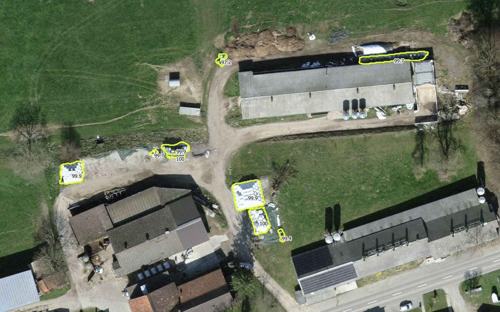
Image: Raw detections (yellow) of silage bale stacks displaying very high confidence scores.
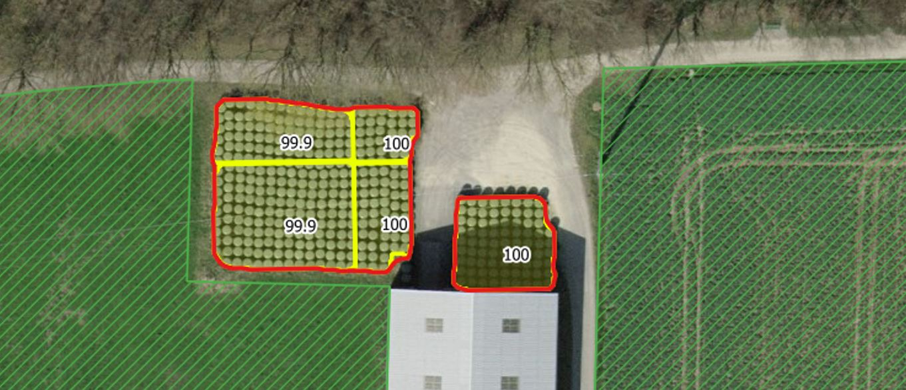
Image: Raw detections (yellow) and postprocessed detections (red) – the area occupied by these silage bale stacks does not interesect with the Cultivable land (LN, green hatched). Direct subsidies are correctly paid out in this case.
3.3 Relevant Features for Delivery¶
In total, 288 silage bale stack sections are placed within the subsidized LN area and exhibit an area consumption larger than 20m². 87 silage bale stacks consume more than 50m², 24 stacks consume more than 100m². One has to keep in mind that many stacks only partially intersect with the LN layer. The overlap between all detected silage bale stacks over 20m² and the LN layer amounts to 14’200m² or an estimated damage between CHF 1'420.- and CHF 2'840.- (assuming the subsidy payout ranges between CHF 10.- and CHF 20.- per 100m²). Considering only the overlap of the 87 largest stacks with the LN layer the area consumption amounts to 7’900m² or a damage between CHF 790.- and CHF 1'580.-.
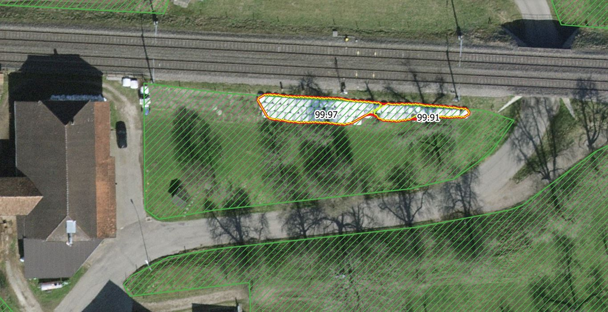
Image: Undeclared silage bale stack (red and yellow) that intersects with the cultivable land layer «LN» (green).
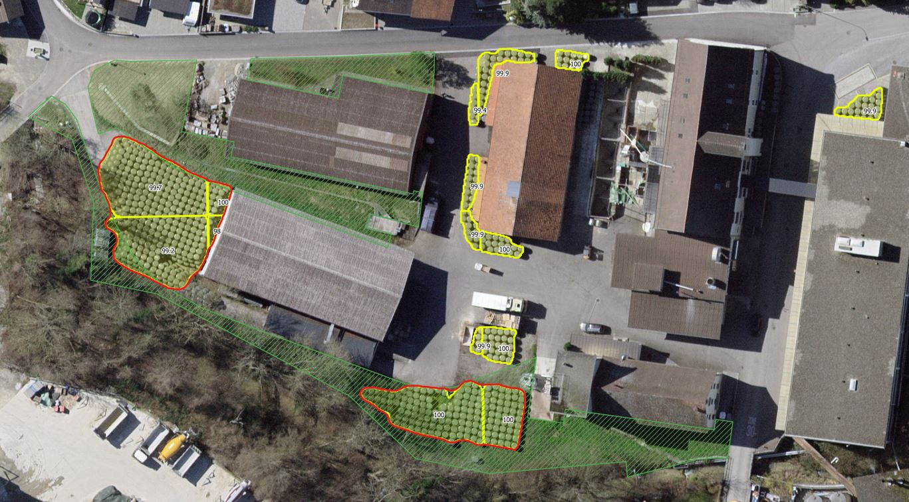
Image: The left side silage bale stack (red) is only touching the LN area (green). The center bottom silage bale stack is completely undeclared within the LN area.
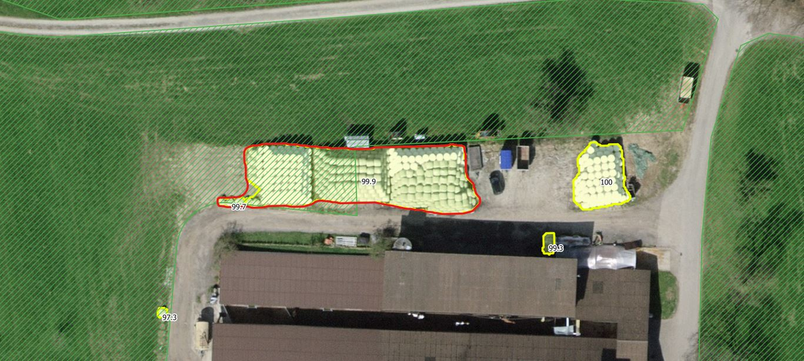
Image: Approximately half of the center silage bale stack (red) is undeclared and situated within the LN area.
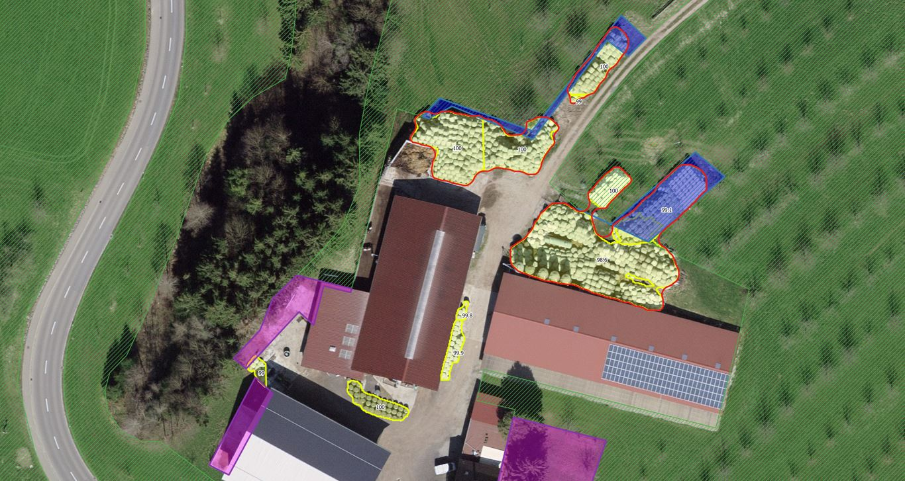
Image: This farm selfdeclared almost all areas needed (blue) for silage bales (red) to be excluded from direct subsidies areas (green). Pink areas are already pre-excluded by the agricultural office.
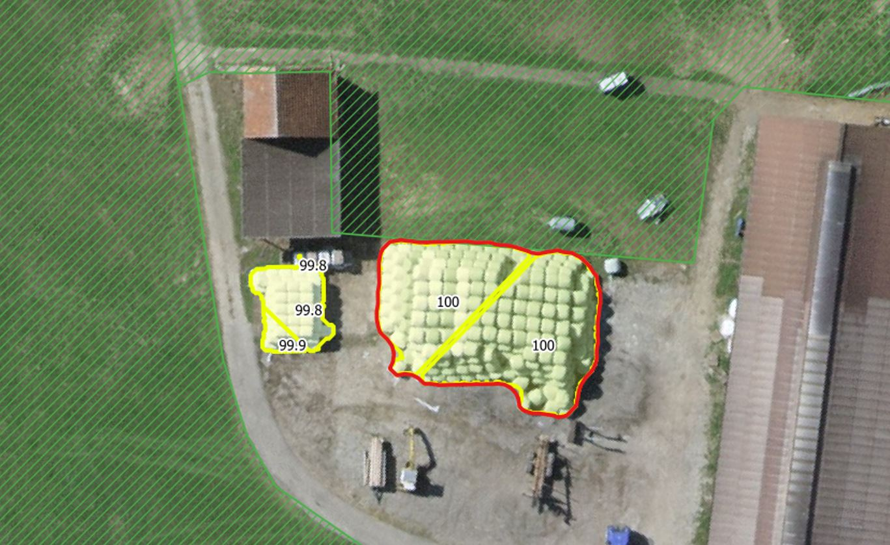
Image: The intersection between the silage bale stack (red) and the LN area (green) is so minute, that it should not be found within the delivery dataset to the agricultural office.
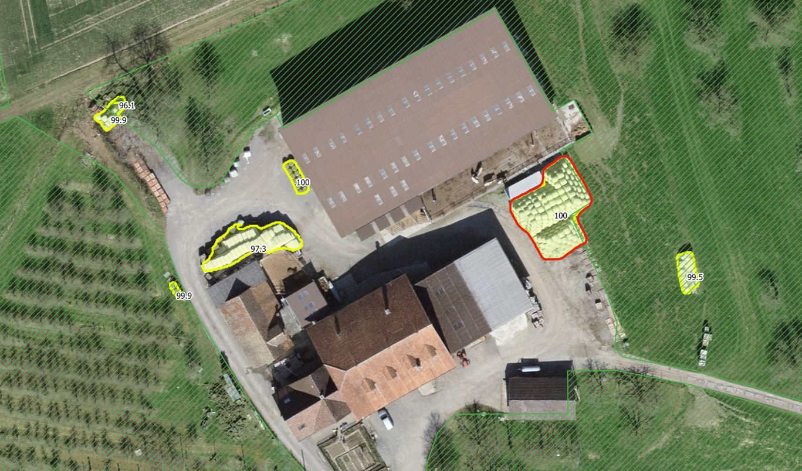
Image: Small silage bale stacks in the very left and very right of the image (yellow) are undeclared but each detection falls below the relevance threshold.
4 Discussion¶
4.1 Feedback by the Agricultural Office¶
The contact person at the agricultural office, Mr. T. Froehlich describes the detections as very accurate with a very low percentage of wrong detections. As a GIS product the detections layer can be used in the standard workflow in order to cross-check base datasets or to perform updates and corrections.
On an economical scale the damage from misplaced sileage bale stacks in the LN areas is not negligible but also not extremely relevant. Federal annual direct agricultural subsidies of approx. 110 Mio. CHF stand in stark contrast to the estimated economical damage of maybe approx. CHF 2'000.- that misplaced silage bales might have caused for the Canton of Thurgau in 2019.
Most farmers adhere to the policies and false declaration of areas followed by sanctions is extremely rare. Silage bales are therefore not the first priority when monitoring the advancements and updates considering the LN layer. Nevertheless these new detections allow the end users at the agricultural office to direct their eyes more quickly at relevant hotspots and spare them some aspects of the long and tidious manual search that was performed in the past.
4.2 Outlook¶
Silage bales are by far not the only object limiting the extent of the cultivable subsidized land. A much larger area is consumed by farm yards – heterogenous spaces around the central farm buildings. Monitoring the growth of these spaces into the LN layer would greatly diminuish the manual workload at the agricultural office. As these spaces might also be detectable by a similar approach, this project will continue to investigate the potential of the STDL Object Detection Framework now into this direction.
References¶
-
Federal Office of Topography swisstopo (2020).
SWISSIMAGE 10 cm - The Digital Color Orthophotomosaic of Switzerland.
https://www.swisstopo.admin.ch/en/geodata/images/ortho/swissimage10.html -
Girshick, R. (2015).
Fast r-cnn.
In Proceedings of the IEEE international conference on computer vision (pp. 1440-1448).
https://openaccess.thecvf.com/content_iccv_2015/html/Girshick_Fast_R-CNN_ICCV_2015_paper.html -
He, K., Gkioxari, G., Dollár, P., & Girshick, R. (2017).
Mask r-cnn.
In Proceedings of the IEEE international conference on computer vision (pp. 2961-2969).
https://arxiv.org/abs/1703.06870 -
OpenStreetMap Foundation (2021).
Slippy Map.
https://wiki.openstreetmap.org/wiki/Slippy_Map -
QGIS.org (2021).
QGIS Geographic Information System.
QGIS Association.
https://qgis.org/en/site/ -
Wu, Y., Kirillov, A., Massa, F., Lo, W. Y., & Girshick, R. (2019).
Detectron2.
https://github.com/facebookresearch/detectron2